- 00 开篇词 JavaScript的进阶之路.md
- 01 函数式vs.面向对象：响应未知和不确定.md
- 02 如何通过闭包对象管理程序中状态的变化？.md
- 03 如何通过部分应用和柯里化让函数具象化？.md
- 04 如何通过组合、管道和reducer让函数抽象化？.md
- 05 map、reduce和monad如何围绕值进行操作？.md
- 06 如何通过模块化、异步和观察做到动态加载？.md
- 07 深入理解对象的私有和静态属性.md
- 08 深入理解继承、Delegation和组合.md
- 09 面向对象：通过词法作用域和调用点理解this绑定.md
- 10 JS有哪8种数据类型，你需要注意什么？.md
- 11 通过JS引擎的堆栈了解闭包原理.md
- 12 JS语义分析该用迭代还是递归？.md
- 13 JS引擎如何实现数组的稳定排序？.md
- 14 通过SparkPlug深入了解调用栈.md
- 15 如何通过哈希查找JS对象内存地址？.md
- 16 为什么环形队列适合做Node数据流缓存？.md
- 17 如何通过链表做LRU_LFU缓存？.md
- 18 TurboFan如何用图做JS编译优化？.md
- 19 通过树和图看如何在无序中找到路径和秩序.md
- 20 算法思想：JS中分治、贪心、回溯和动态规划.md
- 21 创建型：为什么说Redux可以替代单例状态管理.md
- 22 结构型：Vue.js如何通过代理实现响应式编程.md
- 23 结构型：通过jQuery看结构型模式.md
- 24 行为型：通过观察者、迭代器模式看JS异步回调.md
- 25 行为型：模版、策略和状态模式有什么区别？.md
- 26 特殊型：前端有哪些处理加载和渲染的特殊“模式”？.md
- 27 性能：如何理解JavaScript中的并行、并发？（上）.md
- 28 性能：如何理解JavaScript中的并行、并发？（下）.md
- 29 性能：通过Orinoco、Jank Busters看垃圾回收.md
- 30 网络：从HTTP_1到HTTP_3，你都需要了解什么？.md
- 31 安全：JS代码和程序都需要注意哪些安全问题？.md
- 32 测试（一）：开发到重构中的测试.md
- 33 测试（二）：功能性测试.md
- 34 测试（三）：非功能性测试.md
- 35 静态类型检查：ESLint语法规则和代码风格的检查.md
- 36 Flow：通过Flow类看JS的类型检查.md
- 37 包管理和分发：通过NPM做包的管理和分发.md
- 38 编译和打包：通过Webpack、Babel做编译和打包.md
- 39 语法扩展：通过JSX来做语法扩展.md
- 40 Polyfill：通过Polyfill让浏览器提供原生支持.md
- 41 微前端：从MVC贫血模式到DDD充血模式.md
- 42 大前端：通过一云多端搭建跨PC_移动的平台应用.md
- 43 元编程：通过Proxies和Reflect赋能元编程.md
- 结束语 JavaScript的未来之路：源于一个以终为始的初心.md
11 通过JS引擎的堆栈了解闭包原理
你好，我是石川。
在前面讲到编程模式的时候，我们就提到过闭包。
如果说一个函数“出生”的地方是作用域，从出生到被回收的“一生”是它的生命周期，那么闭包则可以突破这种空间和时间上的限制，那它是怎么做到这种突破的呢？
这节课，我们就从JavaScript编译原理以及其中的栈和堆的数据结构开始，来看看闭包的原理。
静态和动态作用域
我们先从作用域的空间概念来说。作用域可以分为静态作用域（static scope）和动态作用域（dynamic scope）。
静态作用域，取决于变量和函数在何处声明，这里你可以想象成它的“出生地”，并在它执行之前就已经确定了。所以静态作用域又被称为词法作用域（lexical scope），因为函数的“出生地”是在词法分析时“登记”的。
动态作用域则相反。动态作用域下，函数的作用域是在函数调用的时候才决定的。所以取决于在何处调用，这里你可以想象成它的“居住地”，这个是可以后天修改的。
我们所写的JavaScript代码，通常是通过前端浏览器编译后运行的，这个过程是先编译、后执行。所以JavaScript代码的作用域是在编译过程中通过分析它在何处声明来确定的，属于静态（词法）作用域。
下面我们来看看函数的作用域在代码编译的阶段是如何定义的，以及它在执行阶段的生命周期。
作用域：代码编译
我们先从作用域说起。下面以V8为例，我们先来看一段代码从编译到执行的过程总览。当我们打开一个页面，执行一段代码时，会经历从环境初始化到代码分析，从编译到执行的过程。具体你可以参考下方的图示：
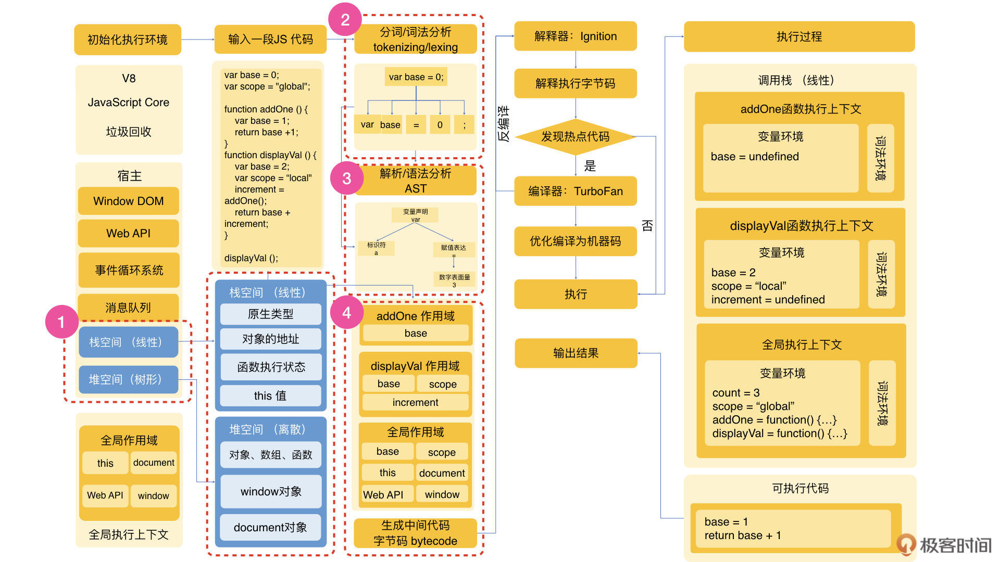
我们在第10讲里面介绍过JavaScript的数据类型。这里我们重点关注上图红色虚线框部分所示的存放和处理数据的栈空间和堆空间。
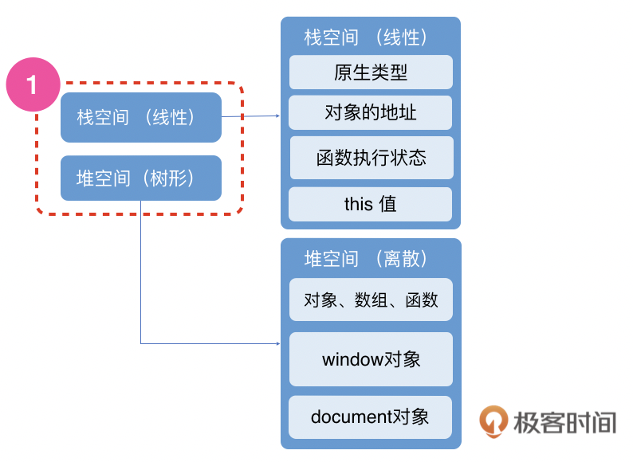
栈是线性连续的数据结构的存储空间，里面主要存有JavaScript原始数据类型以及对象等复杂数据类型的地址。除此之外还有函数的执行状态和this值。堆是树形非连续的数据结构的存储空间，里面存储了对象、数组、函数等复杂数据类型，还有系统内置的window和document对象。
说完存储，下面通过一段代码，我们再来看下从词法到语法分析的过程。
var base = 0;
var scope = "global";
function addOne () {
var base = 1;
return base +1;
}
function displayVal () {
var base = 2;
var scope = "local"
increment = addOne();
return base + increment;
}
当我们输入上面这段代码后，代码像字符串一样被拆分成段，这个是叫做分词或词法分析（tokenizing/lexing）的过程。在这个过程中，比如var base = 0会被分为var变量、base、赋值表达、数字常量0。 词法作用域指的就是拆分成词法标记时这段代码所在的作用域。如下图红色虚线框部分所示：
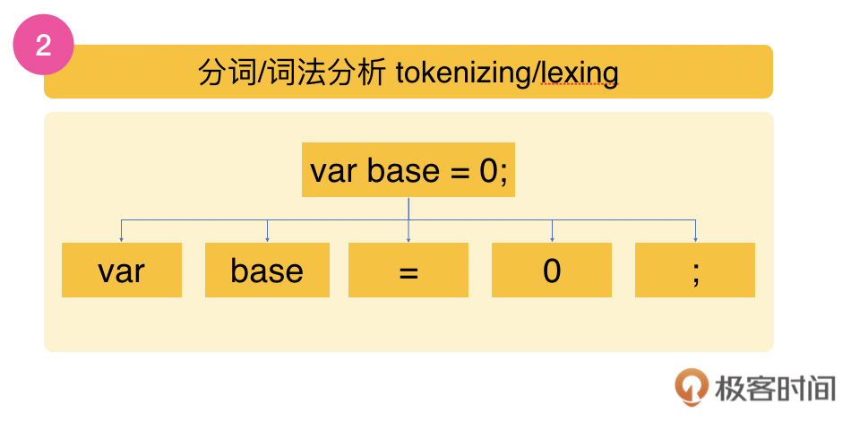
在词法拆分之后，在下一步的解析（parsing）动作中，上面一段段的代码会被转换成一个抽象语法树（AST, Abstract Syntax Tree），这就到了语法分析。在这个语法树的顶端，我们可以看到一个父节点，它就是var这个变量的声明。在这个父节点的下面，有两个子节点：一个子节点是标识符count；另外一个子节点就是等号的赋值表达。在等号赋值表达的节点下面，还有一个子节点就是数字表面量0。如下图红色虚线框部分所示：
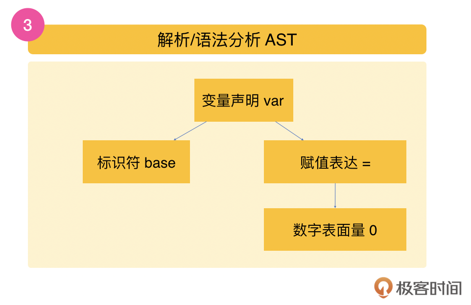
根据流程图中的红色虚线框部分所示，在词法分析后，JavaScript引擎会在做语法分析的同时，更新全局作用域和创建局部作用域。在这个代码例子中，全局作用域里增加了base和scope变量，displayVal里有base、scope和increment变量，而addOne里有base变量。
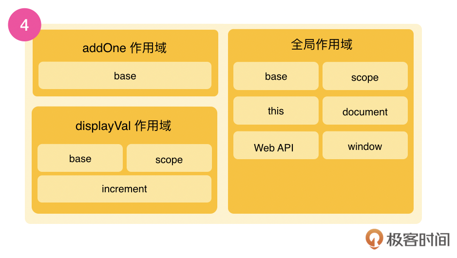
在作用域创建后，上面的代码就会变为中间代码，V8 会混合使用编译器和解释器技术的双轮驱动设计实时编译（JIT Just in Time），这个双轮的一个轮子是直接执行，另一个发现热点代码会优化成机器码再执行，这样做的目的是为了性能的权衡和提升。这个我们在这一讲不需要深入学习，我们只需要知道在这之后就是编译的结束，我们的代码接下来要到执行过程了。
是不是有点晕，没关系，我们抽象总结一下。这里我们从空间角度了解到，函数在创建伊始是存放在堆空间中的，并且通过栈空间中的地址来查找。我们通过编译的过程，了解了作用域在代码未执行的解析阶段就完成了。
生命周期：代码执行
如果说作用域是从“空间”维度思考问题，那么生命周期就是从“时间”维度来看问题。接下来，咱们就来看看在代码执行的阶段，一个函数从调用到结束的过程，也就是它的生命周期。
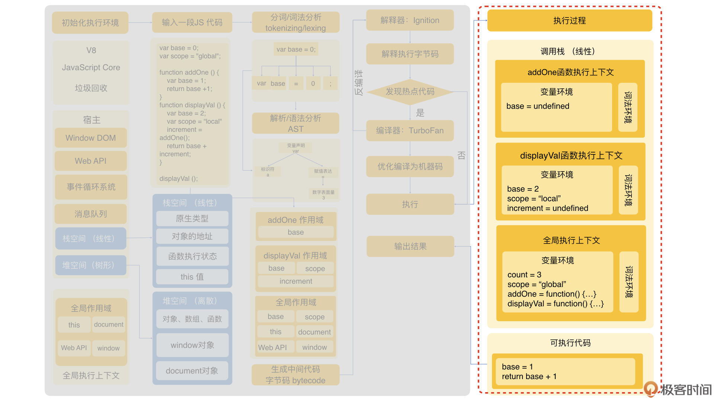
函数的生命周期
上面我们提到过堆和栈的概念。在JavaScript执行的时候，全局执行上下文会在一个类似栈的数据结构里面，根据函数调用链依次执行，所以又称为调用栈。下面我们看看根据上面的代码，按步骤会生成的栈。
一开始，base、scope、addOne、displayVal 都会被记录在变量环境。可执行的代码包含了base和scope的赋值，还有displayVal()函数的调用。当赋值结束就会执行displayVal函数。
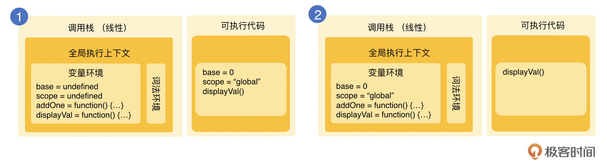
在执行displayVal函数的时候，displayVal函数相关的全局上下文就会被压入栈内，因为base和scope都有函数内声明，所以它们在函数内也会有变量提升到increment的上面。作为可执行代码，完成base和scope的赋值。下面执行addOne函数的调用。
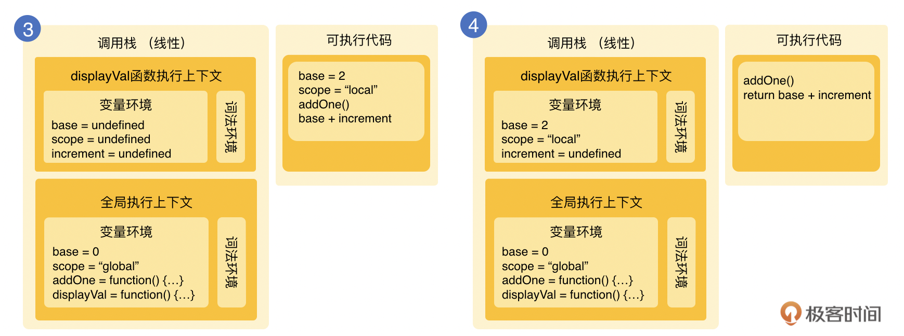
再后面，需要继续将addOne压入栈内，base变量再次赋值，然后执行返回base+1的结果。在此以后，函数addOne的上下文会从栈里弹出，作为值返回到displayVal函数。
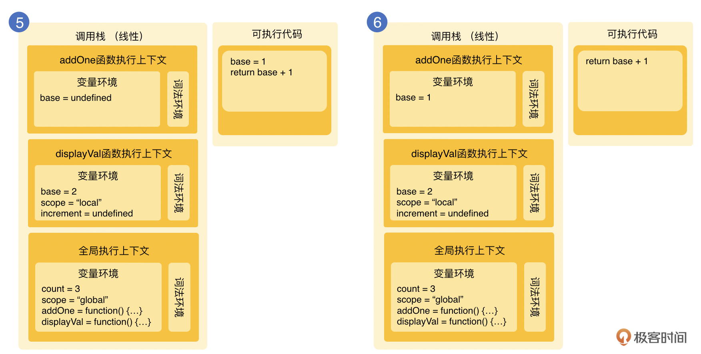
在最后的运行步骤里，displayVal 的increment会被赋值为2，之后函数会返回2+2的值，为4。之后displayVal的函数执行上下文也会被弹出，栈中将只剩下全局的执行上下文。addOne和displayVal这两个函数的生命周期就随着执行的结束而结束了，并且会在之后的垃圾回收过程中被回收。
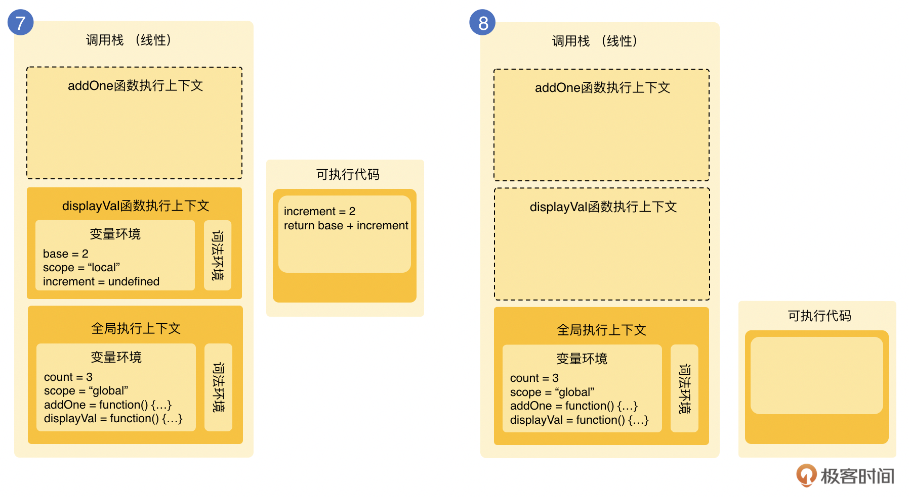
执行时变量查找
前面我们说过，JavaScript的作用域是在编译过程中的词法分析时决定的，下面我们就来看看从编译到执行的过程中，引擎是如何与作用域互动的。
还是以var base = 0为例，在下图的左边，我们可以看到当编译器遇到var base的时候，会问作用域这个base是否已经存在，如果是的话，会忽略这个声明；如果base不存在，则会让作用域创建一个新变量base，之后会让引擎处理base=2的赋值。
这个时候引擎又会回过头来问作用域，在当前执行的作用域当中有没有base这个变量，如果有的话，执行赋值，否则会继续寻找，一直到找到为止。
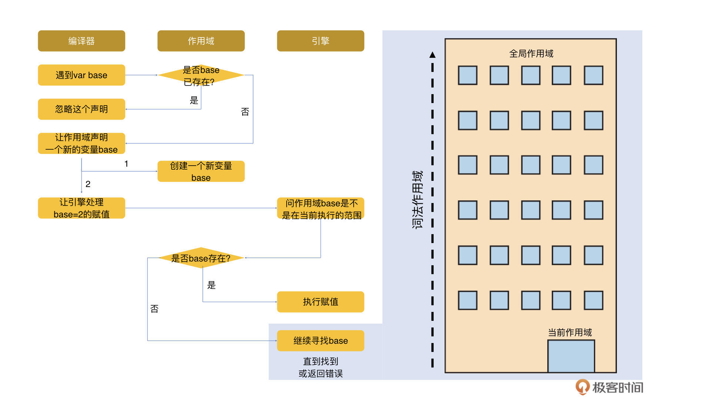
这里还有一个问题值得思考：上面例子中执行的最后一步，我们提到如果引擎在当前执行作用域找不到相关变量，会一直找或返回报错，那么这个“一直找”的顺序是什么呢？答案是它会从内往外地找。我们可以通过下面一个经典的嵌套的作用域例子来看。
在这个例子里，我们可以看到第一层是全局作用域，里面只有一个标识符为outer的函数声明。中间第二层是一个函数作用域，里面有a，也就是函数outer的形参；b是一个变量声明； inner是一个嵌套函数。然后最里面第三层的函数作用域里有a、b和c。当我们执行outer(1)的时候，引擎会从内到外，先从最里边的第三层找起，然后在第二层inner的作用域里找，如果找不到，就会在第一层outer的作用域里找，在这里可以找到a。
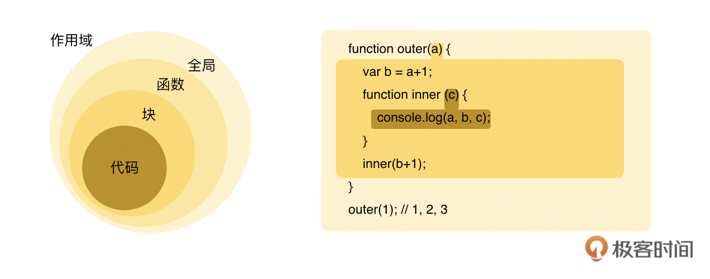
IIFE：利用作用域封装
通过例子延伸，我们可知，作用域的层级可以分为块儿级、函数和全局这样的嵌套关系。块级作用域和函数级作用域都可以帮助我们对代码进行封装，控制代码的可见性。虽然常见的声明式函数可以帮助我们达到这个目的，但是它有两个问题：
- 第一个是如果我们以声明式函数为目的来做封装的话，它会间接地创建foo这个函数，会对全局作用域造成污染；
- 第二个问题是我们需要通过一个foo()来对它进行调用，解决这个问题的办法就是使用一个立刻调用的函数表达 （IIFE，immediately invoked function expression）。
在下面的例子中，我们可以看到，在使用这种表达方式的时候，我们可以使用第一组括号将函数封装起来，并且通过最后一组括号立刻调用这个函数。
var a = 2;
(function foo(){
var a = 3;
console.log( a ); // 3
})();
console.log( a ); // 2
闭包：突破作用域限制
前面我们系统地了解了函数的作用域和生命周期，提到了变量和函数在栈中的调用和执行后的销毁、垃圾回收，我将它归之“守正”。那么接下来，我们就看看如何突破这种限制，也可以谓之“出奇”。
在下面的代码中，我们运用了函数的3个特点：
- 在函数内部生成了一个局部的变量i；
- 嵌入了increment和getValue这两个函数方法；
- 把函数作为返回值用return来返回。
function createCounter(){
let i=0;
function increment(){
i++;
}
function getValue(){
return i;
}
return {increment,getValue}
}
const counter = createCounter();
通过上述操作，我们可以看到，当我们执行下面的一段代码时，会发现即使在createCounter执行完成后，按道理相关变量 i 应该被销毁了，并完成相关的垃圾回收（garbage collection）。我们仍然可以访问它内部的变量 i，并可以继续调用increment和getValue方法。当我们尝试增加 i 的值的时候，会看到返回不断增加的结果。
counter.increment();
counter.getValue(); // 返回1
counter.increment();
counter.getValue(); // 返回2
它的原理是什么呢？这要回到我们较早前说到的解析或语法分析步骤。
在这个过程中，当JavaScript引擎解析函数的时候，用的是延迟解析，而不是及时解析。这样做的目的是减少解析时间和减少内存使用。所以在语法解析的时候，只会解析到createCounter函数这一层，而不会继续解析嵌入的increment和getValue函数。但是引擎同时又有一个预解析的功能，可以看到increment和getValue会引用一个外部的变量 i，所以会把这个变量从栈移到堆中，就用了更长的记忆来记录 i 的值。通过这种方式，闭包就做到了守正出奇，以此突破了作用域和生命周期的限制。
但是有一点要注意的是，考虑到性能、内存和执行速度，当使用闭包的时候，我们就要注意尽量使用本地而不要用全局变量。
延伸：提升问题和解决方法
变量和函数提升
下面我们再延伸看一下变量和函数声明的提升。我们先来看一个例子，我们把上面的var base = 2 这段代码拆开，可以看到第1行base=2是一个赋值的表达，第2行var base是一个变量声明。常识会告诉我们，这可能造成base返回的是undefined，因为base在还没声明的时候就被赋值了。可当你执行console.log(base) 时看到返回的结果是2。
base = 2;
var base;
console.log(base); // 2
为什么会这样呢？因为在代码的编译执行过程中，var base这个声明会先被提升，base=2这个赋值的动作才被执行。
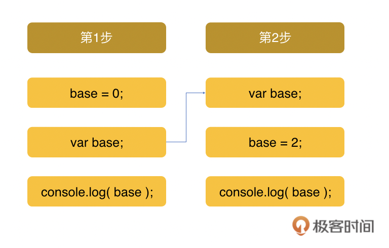
在下面的例子，我们再来看看如果我们先通过console.log试图获取base的值，然后再写一句var base = 3 这样的变量声明和赋值，结果是不是按照变量提升原则应该返回3呢？答案是undefined！
console.log(base); // undefined
var base = 3;
在这个编译执行过程中，var base=3 这个声明和赋值会被拆成两个部分，一个是声明 var base，一个是赋值 base=3。变量提升，提升的只是变量base的声明；变量base的赋值是不会被提升的，而仍然是提升后执行的。下面显示的是它的词法拆分和提升后的顺序。
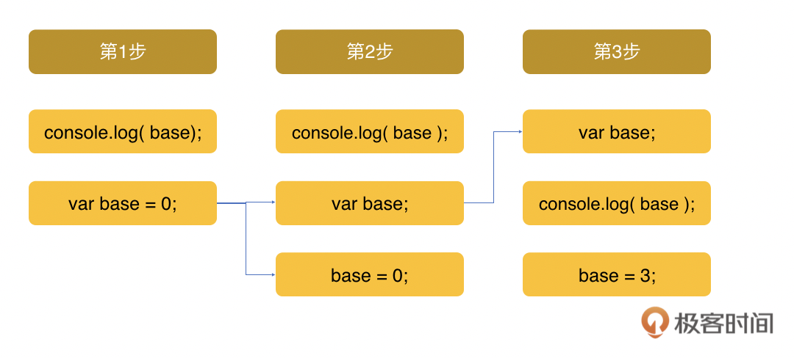
和变量一样，函数声明也会被提升到顶部，而且如果函数和变量的提升同时发生，函数会被提到变量的前面。另外一点值得注意的是，如我们在前一讲所说，函数提升的只是声明式函数，而表达式函数则和变量赋值一样，不会被提升。
ES6块级作用域
不过关于变量和函数的提升特点，其实还存在着一定的问题，就是会造成变量的覆盖和污染。从ES6开始，除了全局作用域和函数作用域外，还有一个就是块级作用域被引进了JavaScript，所以在变量声明中，除了var以外，加入了let和const，这两个变量和常量就是块级作用域的变量，它们不会被提升。
我们可以尝试下，当我们输入 console.log(base)，然后再用let声明 base=0 会发现报错。
{
console.log(base); // ReferenceError!
let base = 0;
}
同样地，在下面的例子里，我们也可以看到在if esle大括号里的 count 不会污染到全局作用域。
var base = 1;
if (base) {
let count = base * 2;
console.log( count );
}
console.log( count ); // ReferenceError
总结
这节课我们用了较多的篇幅讲了“守正”，也就是一般情况下一个函数的作用域和生命周期；较少的篇幅讲了“出奇”，也就是闭包突破限制的原理。因为只有当我们对函数的实际编译和执行过程有所了解，站在一个函数的角度，和它一起走过一遍生命旅程，从它是怎么创建的，一步步到它的词法和语法分析，编译优化到执行，调用到销毁到回收，我们才能更清楚地了解如何利用规则，或者更近一步突破规则的限制。
同时我们也看到了JavaScript本身的变量和函数提升具有一定的反直觉性，虽然我们不能说这是一个bug，但在一些开发者看来是一种缺陷。所以在后面的ES6开始，引进了块级作用域。希望你通过对原理的了解，能够更加清楚它们的使用方法。
思考题
在讲到函数式编程时，我们说到了闭包可以作为和对象相比的数据存储结构，在讲到面向对象编程模式时，我们也说到了它可以用来创建对象的私有属性。那么除了这些例子外，你还能举例说明它的其它作用吗？
欢迎在留言区分享你的积累，我们一起交流讨论。另外，也欢迎你把今天的内容分享给更多的朋友。我们下期再见！
© 2019 - 2023 Liangliang Lee. Powered by gin and hexo-theme-book.